정보처리기사(구) (2015-05-31 기출문제)
1과목: 데이터 베이스
1. 다음 자료에 대하여 삽입(insertion) 정렬 기법을 사용하여 오름차순으로 정렬하고자 한다. 1회전 후의 결과는?
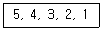
- 4, 3, 2, 1, 5
- 3, 4, 5, 2, 1
- 4, 5, 3, 2, 1
- 1, 2, 3, 4, 5
(정답률: 73%)

2. What is the quantity of tuples in consist of the relation?
- Degree
- Instance
- Domain
- Cardinality
(정답률: 78%)
3. 병행제어 기법 중 로킹(Locking) 기법에 대한 설명으로 옳지 않은 것은?
- 로킹의 대상이 되는 객체의 크기를 로킹 단위라고 한다.
- 로킹 단위가 작아지면 병행성 수준이 높아진다.
- 로킹 단위가 커지면 로킹 오버헤드가 증가한다.
- 데이터베이스도 로킹 단위가 될 수 있다.
(정답률: 80%)
4. 데이터베이스 설계 순서로 옳은 것은?
- 요구 조건 분석 → 개념적 설계 → 논리적 설계 → 물리적 설계 → 구현
- 요구 조건 분석 → 논리적 설계 → 개념적 설계 → 물리적 설계 → 구현
- 요구 조건 분석 → 논리적 설계 → 물리적 설계 → 개념적 설계 → 구현
- 요구 조건 분석 → 개념적 설계 → 물리적 설계 → 논리적 설계 → 구현
(정답률: 84%)
5. 어떤 릴레이션 R에서 X와 Y를 각각 R의 애트리뷰트 집합의 부분 집합이라고 할 경우 애트리뷰트 X의 값 각각에 대해 시간에 관계없이 항상 애트리뷰트 Y의 값이 오직 하나만 연관되어 있을 때 Y는 X에 함수종속이라고 한다. 이 함수 종속의 표기로 옳은 것은?
- X → X
- Y ⊂ X
- X → Y
- X ⊂ Y
(정답률: 73%)
6. 데이터베이스의 특성으로 옳지 않은 것은?
- 실시간 접근성
- 동시 공용
- 계속적인 변화
- 주소에 의한 참조
(정답률: 80%)
7. 데이터 모델의 구성 요소 중 데이터베이스에 표현된 개체 인스턴스를 처리하는 작업에 해당 명세로서 데이터베이스를 조작하는 기본 도구에 해당하는 것은?
- Operation
- Constraint
- Structure
- Relationship
(정답률: 66%)
8. DBMS의 필수 기능 중 모든 응용프로그램들이 요구하는 데이터 구조를 지원하기 위해 데이터 베이스에 저장될 데이터의 타입과 구조에 대한 정의, 이용방식, 제약조건 등을 명시하는 것은?
- Manipulation 기능
- Definition 기능
- Control 기능
- Procedure 기능
(정답률: 72%)
9. 다음 트리의 중위 순회 결과는?
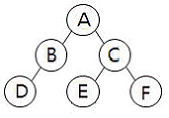
- A B D C E F
- D B A E C F
- A B C D E F
- D B E F C A
(정답률: 75%)
10. 시스템 카탈로그에 대한 설명으로 옳지 않은 것은?
- 시스템 카탈로그는 DBMS가 스스로 생성하고 유지하는 데이터베이스 내의 특별한 테이블들의 집합체이다.
- 일반 사용자도 SQL을 이용하여 시스템 카탈로그를 직접 갱신할 수 있다.
- 데이터베이스 구조가 변경될 때마다 DBMS는 자동적으로 시스템 카탈로그 테이블의 행을 삽입, 삭제, 수정한다.
- 시스템 카탈로그는 데이터베이스 구조에 대한 메타 데이터를 포함한다.
(정답률: 82%)
11. 병행제어의 목적으로 옳지 않은 것은?
- 시스템 활용도 최대화
- 사용자에 대한 응답시간 최소화
- 데이터베이스 공유 최소화
- 데이터베이스 일관성 유지
(정답률: 84%)
12. 정규화에 관한 설명으로 옳지 않은 것은?
- 릴레이션 R의 도메인의 값이 원자 값만을 가지면 릴레이션 R은 제1정규형에 해당된다.
- 정규화는 차수가 높을수록(제1정규형→제5정규형) 만족시켜야 할 제약조건이 많아진다.
- 릴레이션 R이 제1정규형을 만족하면서, 키가 아닌 모든 속성이 기본 키에 완전 함수 종속이면 릴레이션 R은 제2정규형에 해당된다.
- 릴레이션 R이 제2정규형을 만족하고, 결정자 이면서 후보 키가 아닌 것을 제거하면 제3정규형에 해당된다.
(정답률: 68%)
13. 릴레이션의 특징으로 옳은 내용 모두를 나열한 것은?
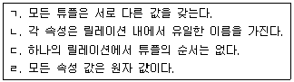
- ㄷ, ㄹ
- ㄴ, ㄷ, ㄹ
- ㄱ, ㄴ, ㄹ
- ㄱ, ㄴ, ㄷ, ㄹ
(정답률: 77%)
14. 다음 설명에 해당하는 스키마는?
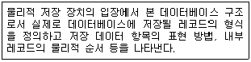
- conceptual schema
- internal schema
- external schema
- definition schema
(정답률: 74%)
15. 관계해석에 대한 설명으로 옳지 않은 것은?
- 수학의 프레디킷 해석에 기반을 두고 있다.
- 관계 데이터 모델의 제안자인 코드(Codd)가 관계 데이터베이스에 적용할 수 있도록 설계하여 제안하였다.
- 튜플 관계해석과 도메인 관련해석이 있다.
- 원하는 정보와 그 정보를 어떻게 유도하는가를 기술하는 절차적 특성을 가진다.
(정답률: 74%)
16. 순서가 A, B, C, D로 정해진 입력 자료를 스택에 입력하였다가 출력할 때, 가능한 출력 순서의 결과가 아닌 것은?
- D, A, B, C
- A, B, C, D
- A, B, D, C
- B, C, D, A
(정답률: 77%)
17. 다음은 무엇에 대한 설명인가?
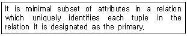
- Super Key
- Foreign Key
- Alternative key
- Candidate Key
(정답률: 48%)
18. 뷰에 대한 설명으로 옳지 않은 것은?
- 뷰는 삽입, 삭제, 갱신 연산에 제약사항이 따른다.
- 뷰는 데이터 접근 제어로 보안을 제공한다.
- 뷰는 물리적으로 구현되는 테이블이다.
- 뷰는 데이터의 논리적 독립성을 제공한다.
(정답률: 81%)
19. 트랜잭션의 특징 중 트랜잭션이 일단 완료되면 그 후에 어떤 형태로 시스템이 고장 나더라도 트랜잭션의 결과는 잃어버리지 않고 지속되는 것은?
- Isolation
- Durability
- Consistency
- Atomicity
(정답률: 56%)
20. 파일조직 기법 중 순차파일에 대한 설명으로 옳지 않은 것은?
- 파일 탐색시 효율이 우수하며, 대화형 처리에 적합하다.
- 레코드가 키 순서대로 편성되어 취급이 용이다.
- 연속적인 레코드의 저장에 의해 레코드 사이에 빈 공간이 존재하지 않으므로 기억장치의 효율적인 이용이 가능하다.
- 필요한 레코드를 삽입, 삭제, 수정하는 경우 파일의 재구성해야 하므로 파일 전체를 복사해야 한다.
(정답률: 64%)
2과목: 전자 계산기 구조
21. 블루레이 디스크(Blue-ray Disc)에 관한 설명으로 틀린 것은?
- 저장된 데이터를 읽기 위해 적색 레이져(650nm)를 사용한다.
- 비디오 포맷은 DVD와 동일한 MPEG-2 기반 코덱이 사용된다.
- 단층 기록면을 가지고 12cm 직경에 25GB의 데이터를 저장할 수 있다.
- 기술 규격으로 BC-ROM(읽기전용), DB-R(기록가능), BD-RE(재기록가능)가 있다.
(정답률: 65%)
22. 소프트웨어에 의하여 인터럽트의 우선순위를 판별하는 방법은?
- 인터럽트 벡터
- 데이지 체인
- 폴링
- 핸드세이킹
(정답률: 60%)
23. 모든 명령(Instruction) 수행시 유효 주소를 구하기 위한 메이저 상태를 무엇이라 하는가?
- FETCH
- EXECUTE
- INDIRECT
- INTERRUPT
(정답률: 48%)
24. 기억장치의 계층 구조 상 접근 속도가 가장 빠른 것은?
- Static RAM
- Register
- Dynamic Ram
- SSD
(정답률: 63%)
25. 부동 소수점 파이프라인의 비교기, 시프터, 가산-감산기, 인크리멘터/디크리멘터가 모두 조합 회로로 구성될 때 네 세그먼트의 시간 지연이 t1=60ns, t2=70ns, t3= 100ns, t4=80ns이고, 중간 레지스터의 지연이 tr=10ns라고 가정하면 클록 사이클은 얼마로 결정되어야 하는가?
- 70ns
- 110ns
- 310ns
- 320ns
(정답률: 51%)
26. 오퍼레이터(operator)나 타이머(timer)에 의해 의도적으로 프로그램이 중단된 경우 발생하는 인터럽트(interrupt)는?
- 기계착오
- 입출력
- 외부
- 프로그램 검사
(정답률: 56%)
27. 하드웨어 특성상 주기억장치가 제공할 수 있는 정보 전달의 능력 한계를 무엇이라 하는가?
- 주기억장치 대역폭
- 주기억장치 접근률
- 주기억장치 지연율
- 주기억장치 사용률
(정답률: 68%)
28. 하드와이어 방식의 제어장치에 관한설명으로 틀린 것은?
- 제어신호의 생성과정에서 지연이 매우 작다.
- 구현되는 논리회로는 명령코드에 따라 매우 간단하다.
- 회로가 주소지정 모드에 따라 매우 복잡하다.
- 소프트웨어 없이 하드웨어만으로 설계된 제어장치이다.
(정답률: 37%)
29. 여러 대의 상호 독립적인 동작이 가능한 컴퓨터들이 연결된 전체 컴퓨터들의 집합으로 전체 컴퓨터들이 상호 연결되어 협력하면서 하나의 컴퓨팅 자원인 것처럼 동작하는 것은?
- Symmetric Multiprocessor
- Nonuniform Memory Access
- Cluster
- Vector Processor
(정답률: 46%)
30. 직접메모리엑세스(DMA)장치에 내장된 레지스터가 아닌 것은?
- Program counter
- Data register
- Address register
- Data count register
(정답률: 43%)
31. 컴퓨터에서 사용된 associative 기억 장치의 특징이 아닌 것은?
- 가격이 고가이다.
- 컴퓨터의 처리 성능을 향상시킨다.
- 가상기억장치, 캐시기억장치의 주소변환 테이블에 사용된다.
- 기억장치 내에 있는 주소를 이용하여 데이터를 직렬로 찾으므로 속도가 빠르다.
(정답률: 58%)
32. 데이터 단위가 8비트인 메모리에서 용량이 64KB일 때 어드레스 핀의 개수는?
- 12개
- 14개
- 16개
- 18개
(정답률: 52%)
33. 그림과 같은 8Bit로 구성된 2주소 명령어 구조의 컴퓨터에서 명령어가 21(16)일 때의 니모닉 명령어로 적합한 것은?
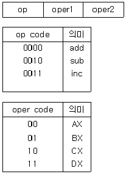
- Sub AX, BX
- Add AX, CX
- Sub BX, CX
- ADD AX, DX
(정답률: 44%)
34. 하드웨어 신호에 의하여 특정 번지의 서브루틴을 수행하는 것은?
- handshaking mode
- vectored interrupt
- DMA
- subroutine call
(정답률: 49%)
35. 10진수 0.1875를 8진수로 변환하면?
- 0.10
- 0.14
- 0.18
- 0.21
(정답률: 51%)
36. 다음 조합 논리회로의 명칭으로 옳은 것은?(단, 입력 변수는 A, B, 출력 변수는 X, Y 이다.)
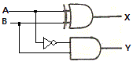
- 전가산기
- 반가산기
- 전감산기
- 반감산기
(정답률: 42%)
37. 중앙처리장치는 4가지 단계를 반복적으로 거치면서 동작을 수행하게 되는데 이에 속하지 않는 것은?
- Fetch Cycle
- Execute Cycle
- Indirect Cycle
- Branch Cycle
(정답률: 72%)
38. 응용프로그램이 단일 프로세서 시스템에서 실행되어 완료되기까지 10초가 소용되었다. 같은 응용프로그램이 4개의 프로세서로 구성된 SMP(Symmetric Multiprocessing) 시스템에서 실행하여 완료되기까지 5초가 소요되었다면 속도 향상 지수(Speed-up Factor)는?
- 0.5
- 1
- 2
- 8
(정답률: 53%)
39. 다음 마이크로오퍼레이션을 수행하였을 때 계산되는 수식은?(단, 니모닉 명령어의 덧셈은 ADD, 뺄셈은 SUB, 곱셈은 MPY, 나눗셈은 DIV로, 이동은 MOVE로 정의한다.)
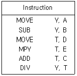
- (A+B)/(C-D+E)
- (A-B)/(C-D+E)
- (A-B)/(C+D*E)
- (A+B)/(C+D*E)
(정답률: 59%)
40. 캐시 교체 알고리즘에서 최근에 가장 적게 사용된 페이지들을 교체하는 방법은?
- FIFO
- LRU
- NRU
- Random
(정답률: 64%)
3과목: 운영체제
41. 교착상태 해결 방안으로 발생 가능성을 인정하고 교착상태가 발생하려고 할 때, 교착상태 가능성을 피해가는 방법은?
- 예방(Prevention)
- 발견(Detection)
- 회피(Avoidance)
- 복구(Recovery)
(정답률: 71%)
42. 파일 보호 기법 중 다음 설명에 해당하는 것은?
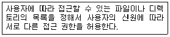
- Cryptography
- Password
- Naming
- Access control
(정답률: 67%)
43. 가상기억장치 구현에서 세그먼테이션(Segmentation) 기법의 설명으로 옳지 않은 것은?
- 주소 변환을 위해서 페이지 맵 테이블(Page Map Table)이 필요하다.
- 세그먼테이션은 프로그램을 여러 개의 블록으로 나누어 수행한다.
- 각 세그먼트는 고유한 이름과 크기를 갖는다.
- 기억장치 보호 키가 필요하다.
(정답률: 50%)
44. 주기억장치 배치 전략 기법으로 First Fit 방법을 사용할 경우, 다음과 같은 기억장소 리스트에서 10K 크기의 작접은 어느 영역에 할당되는가?(단, 탐색은 위에서 아래로 한다.)
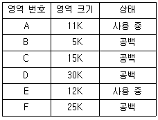
- A
- C
- E
- F
(정답률: 76%)
45. 현재 헤드 위치가 53에 있고 트랙 0번 방향으로 이동 중이다. 요청 대기 큐에는 다음과 같은 순서의 액세스 요청이 대기 중일 때 SSTF 스케줄링 알고리즘을 사용한다면 헤드의 총 이동거리는 얼마인가?
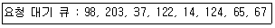
- 202
- 236
- 256
- 320
(정답률: 55%)
46. 로드(Loader)의 종류 중 별도의 로더 없이 언어번역 프로그램이 로더의 기능까지 수행하며, 연결 기능은 수행하지 않고 할당, 재배치, 적재 작업을 모두 언어번역 프로그램이 담당하는 것은?
- Relocating Loader
- Dynamic Loading Loader
- Absolute Loader
- Compile And Go Loader
(정답률: 58%)
47. 3개의 페이지 프레임(Frame)을 가진 기억장치에서 페이지 요청을 다음과 같은 페이지 번호 순으로 요청했을 때 교체 알고리즘으로 FIFO 방법을 사용한다면 몇 번의 페이지 부재(Fault)가 발생하는가?(단, 현재 기억장치는 모두 비어 있다고 가정한다.)
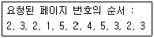
- 7번
- 8번
- 9번
- 10번
(정답률: 57%)
48. 분산 운영체제의 구조 중 완전 연결(Fully Connection)에 대한 설명으로 옳지 않은 것은?
- 모든 사이트는 시스템 안의 다른 모든 사이트와 직접 연결된다.
- 사이트들 간의 메시지 전달이 매우 빠르다.
- 기본 비용이 적게 든다.
- 사이트 간의 연결은 여러 회선이 존재하므로 신뢰성이 높다.
(정답률: 72%)
49. 분산 운영체제에서 사용자가 원하는 파일이나 데이터베이스, 프린터 등의 자원들이 지역 컴퓨터 또는 네트워크 내의 다른 원격지 컴퓨터에 존재하더라도 위치에 관계없이 그의 사용을 보장하는 개념은?
- 위치 투명성
- 접근 투명성
- 복사 투명성
- 접근 독립성
(정답률: 62%)
50. 운영체제의 목적으로 거리가 먼 것은?
- 신뢰도 향상
- 응답시간 단축
- 반환시간 감소
- 처리량 감소
(정답률: 75%)
51. RR(Round-Robin) 스케줄링에 대한 설명으로 옳지 않은 것은?
- 우선 순위 계산식은 "(대기시간+서비스시간)/서비스시간" 이다.
- "Time Sharing System 을 위해 고안된 방식이다.
- 시간 할당이 커지면 FCFS 스케줄링과 같은 효과를 얻을 수 있다.
- 시간 할당이 작아지면 프로세스 문맥 교환이 자주 일어난다.
(정답률: 67%)
52. UNIX에서 파일의 사용 허가를 지정하는 명령은?
- CP
- cat
- chmod
- ls
(정답률: 75%)
53. 다중 처리기 운영체제 형태 중 주/종(master/slave) 시스템에 대한 설명으로 옳지 않은 것은?
- 주 프로세서와 종 프로세서 모두 운영체제를 수행한다.
- 비대칭 구조를 갖는다.
- 주프로세서는 입출력과 연산을 담당하고 종프로세서는 연산만 담당하다.
- 주프로세서가 고장 나면 시스템전체가 다운된다.
(정답률: 68%)
54. 파일 시스템에 대한 설명으로 옳지 않은 것은?
- 사용자가 파일을 생성하고 수정하며 제거할 수 있도록 한다.
- 한 파일을 여러 사용자가 공동으로 사용할 수 있도록 한다.
- 사용자가 적합한 구조로 파일을 구성할 수 없도록 제한한다.
- 사용자와 보조기억장치 사이에서 인터페이스를 제공한다.
(정답률: 67%)
55. UNIX 시스템에서 명령어 해독의 기능을 수행하는 것은?
- Pipe
- Utility Program
- Kernel
- Shell
(정답률: 69%)
56. 시분할 시스템(Time Sharing System)에 대한 설명으로 옳지 않은 것은?
- 대화식 처리가 가능하다.
- 시분할 시스템에 사용되는 처리기를 Time Slice 라고 한다.
- 실제로 많은 사용자들이 하나의 컴퓨터를 공유하고 있지만 마치 자신만의 컴퓨터 시스템을 독점하여 사용하고 있는 것처럼 느끼게 된다.
- H/W를 보다 능률적으로 사용할 수 있는 시스템이다.
(정답률: 36%)
57. 사이클이 허용되고, 불필요한 파일제거를 위해 참조카운터가 필요한 디렉토리 구조는?
- 1단계 디렉토리 구조
- 2단계 디렉토리 구조
- 트리 디렉토리 구조
- 일반 그래프형 디렉토리 구조
(정답률: 51%)
58. HRN 방식으로 스케줄링 할 경우 입력된 작업이 다음과 같을 때 우선순위가 가장 높은 것은?
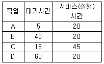
- A
- B
- C
- D
(정답률: 73%)
59. 스레드(Thread)에 대한 설명으로 거리가 먼 것은?
- 하나의 스레드는 상태를 줄인 경량 프로세스라고도 한다.
- 하나의 프로세스에는 하나의 스레드만 존재한다.
- 프로세스 내부에 포함되는 스레드는 공통적으로 접근 가능한 기억장치를 통해 효율적으로 통신한다.
- 스레드를 사용하면 하드웨어, 운영체제의 성능과 응용 프로그램의 처리율을 향상시킬 수 있다.
(정답률: 76%)
60. UNIX이 특징으로 옳지 않은 것은?
- 트리 구조의 파일 시스템을 갖는다.
- 대화식 운영체제이다.
- 이식성이 높으며, 장치, 프로세스 간의 호환성이 높다.
- Multi-Tasking은 지원하지만 Multi-User는 지원하지 않는다.
(정답률: 77%)
4과목: 소프트웨어 공학
61. 한 모듈내의 각 구성 요소들이 공통의 목적을 달성하기 위하여 서로 얼마나 관련이 있는지의 기능적 연관의 정도를 나타내는 것은?
- cohesion
- coupling
- structure
- unity
(정답률: 59%)
62. 소프트웨어 재공학 활동 중 기존 소프트웨어를 다른 운영체제나 하드웨어 환경에서 사용할 수 있도록 변환하는 작업은?
- restructuring
- reverse engineering
- analysis
- migration
(정답률: 52%)
63. 소프트웨어 위기 발생 요인과 거리가 먼 것은?
- 소프트웨어 생산성 향상
- 소프트웨어 특징에 대한 이해 부족
- 소프트웨어 관리의 부재
- 소프트웨어 품질의 미흡
(정답률: 77%)
64. 소프트웨어 품질 목표 중 사용자의 요구 기능을 충족시키는 정도를 의미하는 것은?
- Reliability
- Portability
- Correctness
- Efficiency
(정답률: 51%)
65. 시스템의 구성 요소 중 입력된 데이터를 처리방법과 조건에 따라 처리하는 것을 의미하는 것은?
- Process
- Control
- Output
- FeedBack
(정답률: 59%)
66. 객체 지향 기법에서 하나 이상의 유사한 객체들을 묶어서 하나의 공통된 특성을 표현한 것을 무엇이라고 하는가?
- 함수
- 메소드
- 메시지
- 클래스
(정답률: 78%)
67. 유지보수의 종류 중 소프트웨어 수명 기간 중에 발생하는 하드웨어, 운영체제 등 환경의 변화를 기존의 소프트웨어에 반영하기 위하여 수행하는 것은?
- Preventive Maintenance
- Perfective Maintenance
- Corrective Maintenance
- Adaptive Maintenance
(정답률: 68%)
68. 검증(Validation) 검사 기법 중 개발자의 장소에서 사용자가 개발자 앞에서 행해지며, 오류와 사용상의 문제점을 사용자와 개발자가 함께 확인하면서 검사하는 기법은?
- 디버깅 검사
- 형상 검사
- 베타 검사
- 알파 검사
(정답률: 70%)
69. 객체지향 시스템에서 자료부분과 연산(또는 함수) 부분 등 정보처리에 필요한 기능을 한 테두리로 묶는 것을 무엇이라고 하는가?
- 정보 은닉(information hiding)
- 클래스(class)
- 캡슐화(encapsulation)
- 통합(integration)
(정답률: 66%)
70. 정형 기술 검토(FTR)의 지침 사항으로 거리가 먼 것은?
- 사전에 작성한 메모들을 공유한다.
- 논쟁이나 반박을 제한하지 않는다.
- 의제를 제한한다.
- 참가자의 수를 제한한다.
(정답률: 74%)
71. 프로젝트 계획 수립시 소프트웨어 범위(Scope) 결정의 주요 요소로 거리가 먼 것은?
- 소프트웨어 개발 환경
- 소프트웨어 성능
- 소프트웨어 제약조건
- 소프트웨어 신뢰도
(정답률: 53%)
72. 바람직한 모듈의 설계 지침이 아닌 것은?
- 유지보수가 용이해야 한다.
- 가능한 모듈을 독립적으로 생성하고 결합도를 최대화 한다.
- 복잡도와 중복성을 줄이고 일관성을 유지시킨다.
- 모듈의 기능은 지나치게 제한적이어서는 안된다.
(정답률: 77%)
73. 자료 흐름도의 요소 중 다음 설명에 해당하는 것은?
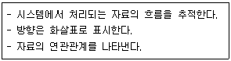
- Process
- data store
- data flow
- terminator
(정답률: 75%)
74. 제어흐름 그래프가 다음과 같을 때 McCabe의 cyelomatic 수는 얼마인가?
- 3
- 4
- 5
- 6
(정답률: 46%)
75. 화이트 박스 검사 기법에 해당하는 것으로만 짝지어진 것은?
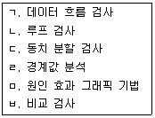
- ㄱ, ㄴ
- ㄱ, ㄹ, ㅁ, ㅂ
- ㄴ, ㄹ, ㅁ, ㅂ
- ㄷ, ㄹ, ㅁ, ㅂ
(정답률: 65%)
76. 소프트웨어 재사용과 관련하여 객체들의 모임, 대규모 재사용 단위로 정의되는 것은?
- Sheet
- Component
- Framework
- Cell
(정답률: 61%)
77. CPM(Critical Path Method)에 대한 설명으로 옳지 않은 것은?
- CPM 네트워크는 노드와 간선으로 구성된 네트워크이다.
- CPM 네트워크는 프로젝트 완성에 필요한 작업을 나열하고, 작업에 필요한 소요기간을 예측하는데 사용된다.
- CPM 네트워크에서 작업의 선후 관계를 파악되지 않아도 무관하다.
- CPM 네트워크를 효과적으로 사용하기 위해서는 필요한 시간을 정확히 예측해야 한다.
(정답률: 64%)
78. 럼바우의 분석 기법에서 다음 설명에 해당하는 것은?
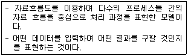
- 기능 모델링
- 동적 모델링
- 객체 모델링
- 정적 모델링
(정답률: 56%)
79. 브룩스(Brooks)의 법칙에 해당하는 것은?
- 소프트웨어 개발 인력은 초기에 많이 투입하고 후기에 점차 감소시켜야 한다.
- 소프트웨어 개발 노력은 40 - 20 - 40 으로 해야 한다.
- 소프트웨어 개발은 소수의 정예요원으로 시작한 후 점차 증원해야 한다.
- 소프트웨어 개발 일정이 지연된다고 해서 말기에 새로운 인원을 투입하면 일정은 더욱 지연된다.
(정답률: 77%)
80. CASE(Computer Aided Software Engineering)에 대한 설명으로 옳지 않은 것은?
- 소프트웨어 모듈의 재사용성을 봉쇄하여 개발 비용을 절감할 수 있다.
- 소프트웨어 품질과 일관성을 효율적으로 관리할 수 있다.
- 소프트웨어 생명 주기의 모든 단계를 연결시켜 주고 자동화시켜 준다.
- 소프트웨어의 유지보수를 용이하게 수행할 수 있도록 해준다.
(정답률: 69%)
5과목: 데이터 통신
81. 비동기 전송에 대한 설명으로 틀린 것은?
- 어떤 문자도 전송되지 않을 때는 통신 회선은 예비(Reserve) 상태가 된다.
- 한 문자를 전송할 때마다 동기화시킨다.
- 각 비트 블록의 앞뒤에 각각 시작과 정지비트를 덧붙여 전송한다.
- 일반적으로 패리티비트를 추가해서 전송한다.
(정답률: 40%)
82. 다음 중 데이터 링크 제어 프로토콜과 이를 제정한 국제기구가 옳게 연결된 것은?
- HDLC - ISO
- LLC - IETF
- PPP - ITU
- LAPB - IEEE
(정답률: 46%)
83. 인터넷 프로토콜로 사용되는 TCP/IP의 계층화 모델 중 Transport 계층에서 사용되는 프로토콜은?
- FTP
- IP
- ICMP
- UDP
(정답률: 55%)
84. 디지털 데이터를 아날로그 신호로 부호화(encoding) 하는 방식은?
- PSK
- NRZ
- FM
- PM
(정답률: 60%)
85. 다음 설명에 해당하는 오류 검출 기법은?
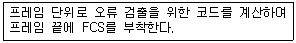
- Parity Check
- Cyclic Redundancy Check
- Hamming Coding
- Block Sum Check
(정답률: 57%)
86. 문자 동기 전송방식에서 데이터 투명성(Data Transparent)을 위해 삽입되는 제어문자는?
- ETX
- STX
- DLE
- SYN
(정답률: 53%)
87. 슬라이딩 윈도우(Sliding window) 제어방식에 대한 설명으로 옳지 않은 것은?
- X.25 패킷 레벨의 프로토콜에서도 사용되고 있으며, 수신 통지를 이용하여 송신 데이터의 양을 조절하는 방식이다.
- 송신측과 수신측 실체(entity)간에 호출설정시 연속적으로 송신 가능한 데이터 단위의 최대치를 절충하는 방식이다.
- 수신측으로부터의 수신통지에 의해 윈도우는 이동하고 새로운 데이터 단위의 송신이 가능하다.
- 하나의 데이터 블록을 전송한 후 응답이 올때까지 다음 데이터 블록을 전송하지 않고 대기하는 방식이다.
(정답률: 60%)
88. 다음이 설명하고 있는 라우팅 프로토콜은?
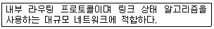
- BGP
- RIP
- OSPF
- EGP
(정답률: 55%)
89. HDLC 프레임 중 전송되는 정보프레임에 대한 흐름 제어와 오류 제어를 위해 사용되는 것은?
- Information Frame
- Unnumbered Frame
- Supervisory Frame
- Reset Frame
(정답률: 52%)
90. 다음 설명에 해당하는 OSI 7계층은?
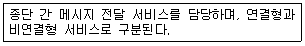
- 물리계층
- 전송계층
- 응용계층
- 네트워크계층
(정답률: 65%)
91. IP 프로토콜에서는 오류 보고와 오류 수정 기능, 호스트와 관리 질의를 위한 메커니즘이 없기 때문에 이를 보완하기 위해 설계된 것은?
- SMTP
- TFTP
- SNMP
- ICMP
(정답률: 56%)
92. HDLC 프레임의 시작과 끝을 정의하는 것은?
- 플래그
- 주소 영역
- 제어 영역
- 정보 영역
(정답률: 73%)
93. 데이터 통신 회선의 이용방식에 의한 분류에 포함되지 않는 것은?
- simplex communication
- half duplex communication
- full duplex communication
- multi access communication
(정답률: 61%)
94. TCP 프로토콜을 사용하는 응용 계층의 서비스가 아닌 것은?
- SNMP
- FTP
- Telnet
- HTTP
(정답률: 44%)
95. PAP(Password Authentication Protocol) 패킷과 CHAP(Challenge Handshake Authentication Protocol) 패킷은 PPP 프레임의 어느 필드 값에 의해 구별되는가?
- 주소
- 제어
- 프로토콜
- 검사함
(정답률: 44%)
96. 다음과 같은 기능을 가지고 있는 프로토콜은?
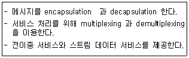
- RTCP
- RTP
- UDP
- TCP
(정답률: 45%)
97. 다음이 설명하는 프로토콜은?
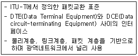
- ATM
- TCP/IP
- UDP
- X.25
(정답률: 67%)
98. 여러 제어에 사용되는 자동반복 요청(ARQ) 기법이 아닌 것은?
- stop-and-wait ARQ
- go-back-N ARQ
- auto-repeat ARQ
- selective-repeat ARQ
(정답률: 65%)
99. 다음이 설명하고 있는 것은?
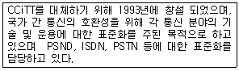
- ITU-T
- ISO
- IEEE
- ANSI
(정답률: 40%)
100. 다음 그림과 같은 전송 방식으로 옳은 것은?
- 문자 위주 동기방식
- 비트지향형 동기방식
- 조보식 동기방식
- 프레임 동기방식
(정답률: 65%)
1회전에서는 첫 번째 원소인 4가 이미 정렬된 상태이므로 그대로 둔다. 두 번째 원소인 5는 4보다 크므로 그대로 둔다. 세 번째 원소인 3은 4보다 작으므로 4와 위치를 바꾼다. 이제 배열은 [3, 4, 5, 2, 1]이 된다. 네 번째 원소인 2는 5보다 작으므로 5와 위치를 바꾼다. 그리고 4보다 작으므로 4와 위치를 바꾼다. 마지막으로 3보다 크므로 3과 위치를 바꾼다. 따라서 1회전 후의 결과는 "4, 5, 3, 2, 1"이 된다.